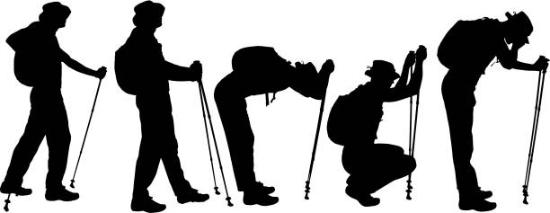

The next chapter of my life is always more interesting than the last one.
Michael Lipsey
It has been the most interesting seven weeks of my life!! This story should end here and now but I doubt it will meet the criteria of a blog story so let’s see if I can put into words what the last seven weeks have been like for me. I will try to use hiking analogies to try and break it down. The first few days were filled with so much new information I could hardly keep up. On some days I would get out of class and have a good laugh at/with myself because I couldn’t believe that I voluntarily walked into this.
As the weeks passed and we got into the course proper, I started to wonder if I had made the right choice because it seemed like I was I had bitten off more than I could chew. It didn’t help that a few people seemed to be miles ahead already or well conversant with the field while I was starting from A, B, C… Thank goodness I have lived long enough to know that on every journey we can’t all be at the same level and that it’s okay.
I am a hiker and on a trail you will always have the strong climbers who lead , then the average bunch who we call “The pack” who are the guys in the middle and then the slow climbers aka “Team Sloth”. I have to say this is the first time I am a certified member of Team Sloth and I am embracing it because I know on mountain those guys have the best experience. They have learned to take it easy and smell the roses. So here I am, taking it real slow, learning the basics, fully aware of the task ahead. I am smelling the roses so to speak as I make my slow climb to the peak that in this case is becoming a software developer.
Staying with the hiking analogy, I have to mention a very crucial category of people on the trail that we can’t do without, the guides. These people already know the mountain, the trails and the tricks you will need to have a successful climb. You will do well to listen and learn from these people because without them you will get lost, injured or worse. We have had a great set of guides on this journey so far.